name: title layout: true class: center --- layout: false count: false .center[ <a href="https://oesteban.github.io/talks/DataEngWorkshop2024/"> <br /> https://oesteban.github.io/talks/DataEngWorkshop2024/ </a> <br /> <br /> ## QC or not QC ### Oscar Esteban < phd@oscaresteban.es > .small[Authors do not have any conflict of interest to be declared] ] ??? --- name: newsection layout: true .perma-sidebar[ <p class="rotate"> <a rel="license" href="http://creativecommons.org/licenses/by/4.0/"><img alt="Creative Commons License" style="border-width:0; height: 20px; padding-top: 6px;" src="https://i.creativecommons.org/l/by/4.0/88x31.png" /></a> <span style="padding-left: 10px; font-weight: 600;">Session 1 | Esteban | QC or not QC</span> </p> ] --- # What is QA/QC? (a personal view) .pull-left[ .distribute.large[ * **Quality Control (QC)**: eliminate substandard data * **Quality Assessment (QA)**: ensure, monitor, and take actions so that all elements in the research workflow perform as expected and do not produce substandard data ] ] .pull-right[ <img align="right" style='margin-right: 50px; width: 90%;' src="https://journals.plos.org/plosone/article/figure/image?size=large&download=&id=10.1371/journal.pone.0184661.g001" /> ] --- # What is QA/QC? (problems/pitfalls) .boxed-content[ .distribute.large[ * What is *substandard data*? * Definition contingent on the QA checkpoint * Levels/metrics dependent on data specifics (i.e., adult vs. infant data) * Limited validity and reliability of metrics * Decision thresholds dependent on application/downstream analysis. * A experience-driven issue: * Exclusion criteria should be defined before acquisition ] ] --- # Consequence: lack of standardization .boxed-content[ .distribute.large[ * Scattered know-how * Heavily idiosyncratic and reliant on your experience and your lab's * Challenging automation * Specially to obtain solutions that generalize (sites, populations, species) * Implicit biases * Data sharing is typically done after QC ] ] --- ## The neuroimaging worflow <br /> <br /> <br /> <br /> .boxed-content[ 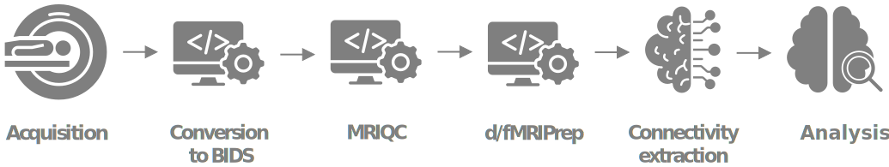 <br /> .align-right[ ([Esteban et al., 2020](http://doi.org/10.1038/s41596-020-0327-3)) ([Niso et al., 2022](https://doi.org/10.1016/j.neuroimage.2022.119623)) ] ] ??? Overall, this slide must be familiar to everyone. In this case, it represents the workflow for MRI connectivity analyses. Like most of the neuroimaging modalities, diffusion MRI start in the scanner, data are reconstructed into 4D images that humans can somehow understand, and in our case, convert them from DICOM into BIDS to maximize future reusability. We next run MRIQC, to obtain an early insight into the data quality. Images are then preprocessed to remove sources of signal of no interest that may bias downstream modeling. We employ fMRIPrep and dMRIPrep for preprocessing. Finally, we extract connectivity matrices and model them statistically. --- ## QA/QC of the neuroimaging worflow <br /> <br /> .boxed-content[ 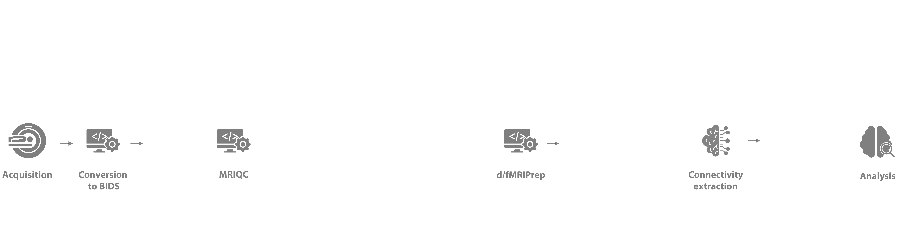 <br /> .align-right[ ([Provins et al., 2023](http://doi.org/10.1038/s41596-020-0327-3)) ] ] ??? Let's zoom out and insert quality checkpoints. The reason is that it has been shown that data quality can bias results, so we want to ensure no subpar image makes all the way into analysis. --- count:false ## QA/QC of the neuroimaging worflow <br /> <br /> .boxed-content[ 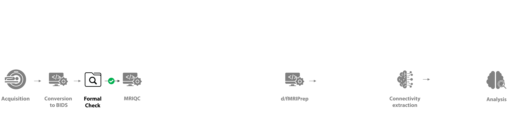 <br /> .align-right[ ([Provins et al., 2023](http://doi.org/10.3389/fnimg.2022.1073734)) ] ] ??? A trivial, but critical first checkpoint is about the completeness and adequacy of metadata and data organization. --- count:false ## QA/QC of the neuroimaging worflow <br /> <br /> .boxed-content[ 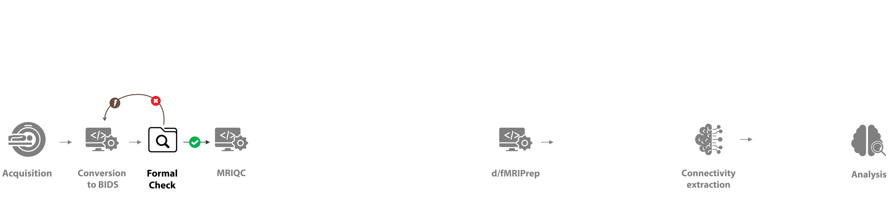 <br /> .align-right[ ([Provins et al., 2023](http://doi.org/10.3389/fnimg.2022.1073734)) ] ] ??? If something fails, for example, we identify that the events timing corresponding to an fMRI task is missing for some subjects, we need to look back and revise our conversion into BIDS. --- count:false ## QA/QC of the neuroimaging worflow <br /> <br /> .boxed-content[ 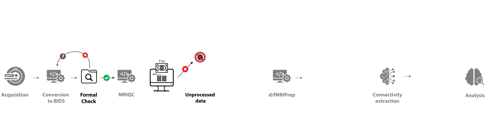 <br /> .align-right[ ([Provins et al., 2023](http://doi.org/10.3389/fnimg.2022.1073734)) ] ] ??? Once that checkpoint is cleared, we execute MRIQC and screen the visual report corresponding to each T1-weighted image in the study. At this point, we must have clear exclusion criteria. Some images may need to be excluded at this point. --- count:false ## QA/QC of the neuroimaging worflow <br /> <br /> .boxed-content[ 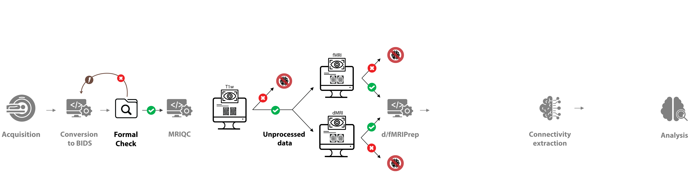 <br /> .align-right[ ([Provins et al., 2023](http://doi.org/10.3389/fnimg.2022.1073734)) ] ] ??? If the quality of the anatomical image is deemed sufficient for the study requirements, we move on to screening the individual visual reports generated with MRIQC for both diffusion and functional MRI. Again, some images may not surpass the quality requirements predefined before acquisition and specifically designed for the study at hand. --- count:false ## QA/QC of the neuroimaging worflow <br /> <br /> .boxed-content[ 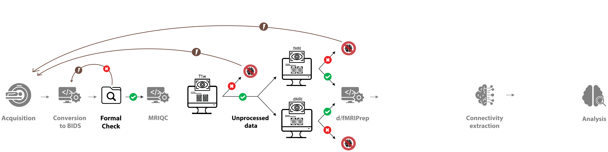 <br /> .align-right[ ([Provins et al., 2023](http://doi.org/10.3389/fnimg.2022.1073734)) ] ] ??? We will be carefull and not only run Quality Control, which essentially means trashing data. We also can run Quality Assesment and inform earlier stages of the workflow. For instance, if an artifact must be addressed during scanning, or the scanner requires a revision. It is critical that these feedback loops are triggered immediately so that artifacts do not replicate for the rest of the collection effort. --- count:false ## QA/QC of the neuroimaging worflow <br /> <br /> .boxed-content[ 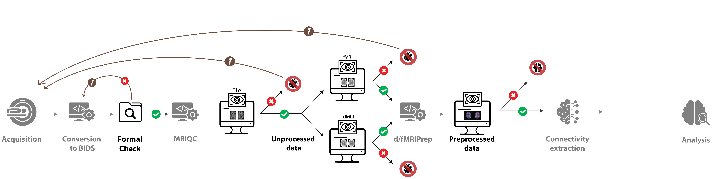 <br /> .align-right[ ([Provins et al., 2023](http://doi.org/10.3389/fnimg.2022.1073734)) ] ] ??? The pattern repeats after preprocessing, and fMRIPrep, and dMRIPrep generate reports just for that. --- count:false ## QA/QC of the neuroimaging worflow <br /> <br /> .boxed-content[ 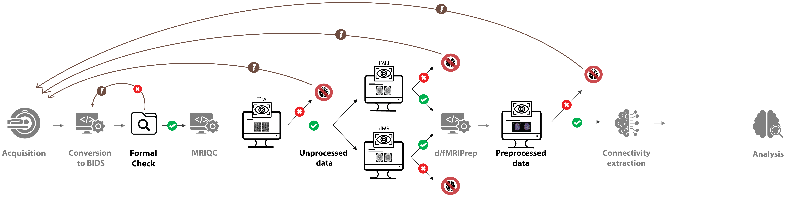 <br /> .align-right[ ([Provins et al., 2023](http://doi.org/10.3389/fnimg.2022.1073734)) ] ] ??? Again, excluded images may require actions at earlier stages. --- count:false ## QA/QC of the neuroimaging worflow <br /> <br /> .boxed-content[ 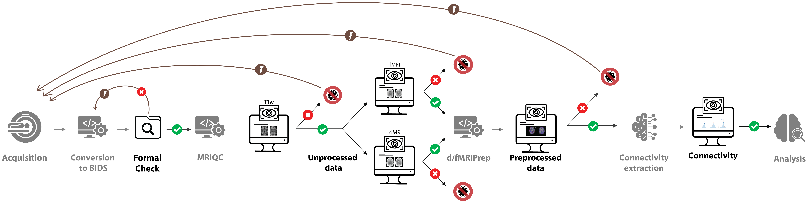 <br /> .align-right[ ([Provins et al., 2023](http://doi.org/10.3389/fnimg.2022.1073734)) ] ] ??? The pattern repeats at the connectivity extraction phase. --- count:false ## QA/QC of the neuroimaging worflow <br /> <br /> .boxed-content[ 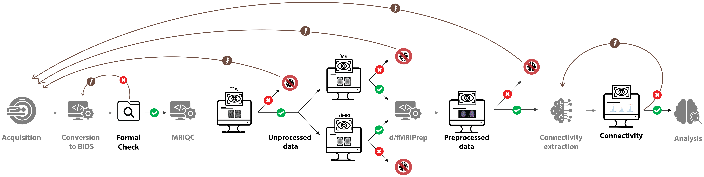 <br /> .align-right[ ([Provins et al., 2023](http://doi.org/10.3389/fnimg.2022.1073734)) ] ] ??? With a corresponding feedback loop. For instance, we may need to revise nuisance regression. --- ## QA/QC protocols: 'Swiss-cheese security model' .boxed-content[ .center[ 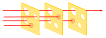 .small[ [BenAveling @ wikipedia](https://en.wikipedia.org/wiki/Swiss_cheese_model#/media/File:Swiss_cheese_model_textless.svg) ] ] ] ??? For those with knowledge about security protocols, this approach will surely evoke the Swiss cheese model. The model assumes that all QC checkpoints will have holes through which data progresses toward analysis. By layering several QC checkpoints looking at the data in different ways, we make sure that images with potential to bias the results do not make all the way through the workflow. --- # Plan ahead: SOPs .boxed-content[ .distribute.large[ * You want to have **Standard Operating Procedures**, a document: * prescribing all details of analysis, * particularly establishing QC/QA points and triggered actions, * establishing exclusion criteria, * accessible to all involved stakeholders. * Check out our *SOPs-cookiecutter* project: * [GitHub template-repository](https://github.com/nipreps/sops-cookiecutter) * [Rendered example](https://www.nipreps.org/sops-cookiecutter/) ] ] --- ## Collaborative QC-Book .right-column3.center[ <a href="https://www.nipreps.org/qc-book/welcome.html"> <br /> https://www.nipreps.org/qc-book/ </a> ] .left-column3[ .large[ *Hands-on quality control of human and preclinical MRI data: from acquisition to post processing* ([nipreps.org/qc-book](https://www.nipreps.org/qc-book)) * A collaborative effort open to the community: * Dataset QC (Jo Etzel) * Preclinical imaging QC (Eilidh MacNicol) * Automating QC of unprocessed data (Oscar Esteban) ] ] --- ## MRIQC: QA/QC of unprocessed data <br /> <br /> .boxed-content[ 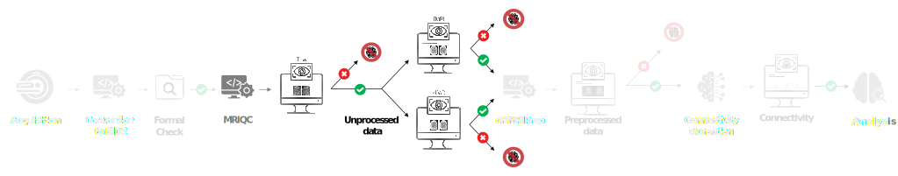 <br /> .align-right[ ([Esteban et al., 2017](http://doi.org/10.1371/journal.pone.0184661)) ] ] ??? Today, we will be focusing in the first layer on unprocessed data, which we implement with MRIQC. --- ## MRIQC: QA/QC of unprocessed data <br /> <br /> .boxed-content[ .center[ 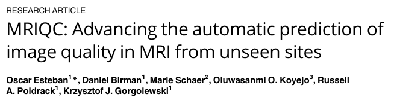 ] <br /> .align-right[ ([Esteban et al., 2017](http://doi.org/10.1371/journal.pone.0184661)) ] ] ??? We created MRIQC at Stanford back in 2016, to assess anatomical and functional images shared through OpenNeuro. --- ## MRIQC: QA/QC of unprocessed data .boxed-content.center[ 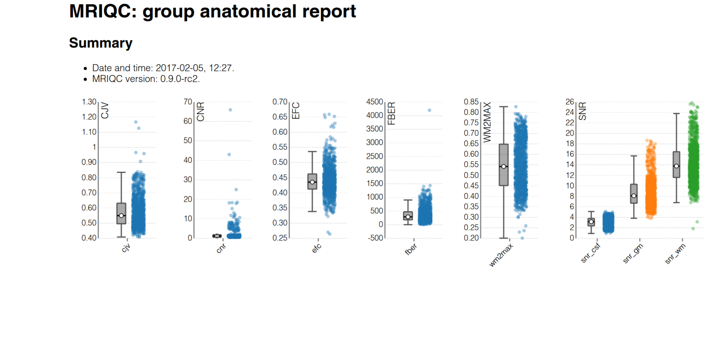 ] ??? MRIQC provides support for visual and automated assessment. Visual assessment is supported with the individual reports, which I'll introduce later. Automated assessment can be built on a number of image quality metrics that we extract from every image. In this slide, you can see a "group" report generated by MRIQC, plotting several image quality metrics corresponding to the T1w images in a large dataset. --- count:false ## MRIQC: QA/QC of unprocessed data .boxed-content.center[ 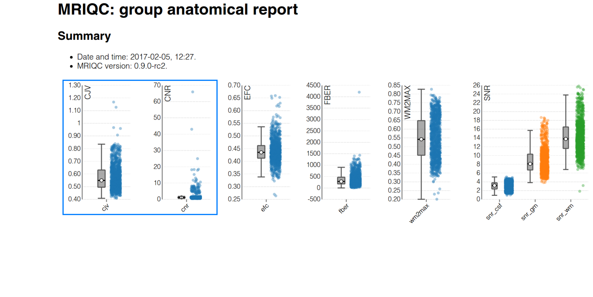 ] ??? Let's focus on the two first, which are the coefficient of joint variation of gray and white matter, and the contrast-to-noise ratio. --- count:false ## MRIQC: QA/QC of unprocessed data .boxed-content.center[ 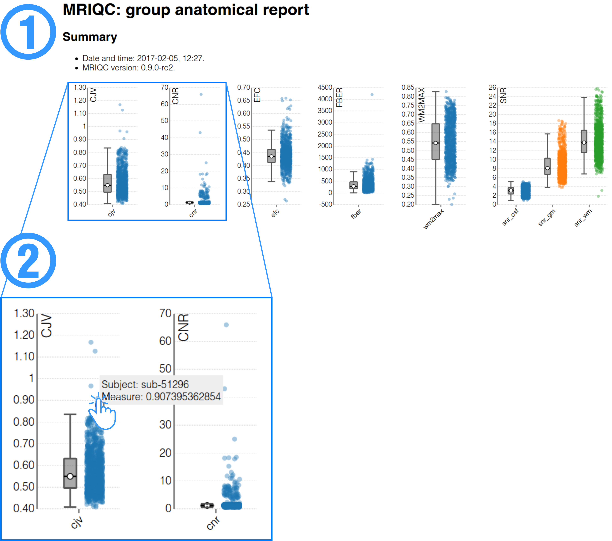 ] ??? If we zoom in, we can find some datapoints where these two particular metrics are outlying. We can click on the particular datapoint, and the individual report opens up in our screen. --- count:false ## MRIQC: QA/QC of unprocessed data .boxed-content.center[ <img src="images/04-mriqc-group.png" alt="workflow" style="width: 60%" /> ] ??? In this case, we can see how this particular T1 weighted image has obvious head motion patterns that probably makes it unusable for almost any application. --- ## Data — The Human Connectome PHantom (HCPh) .boxed-content.center[ <img src="https://www.axonlab.org/hcph-sops/assets/images/cohort1.png" alt="workflow" style="width: 60%" /> ] ??? The development of MRIQC for diffusion has gone hand-in-hand with the collection of the first subset of our Human Connectome Phantom study. This is developed as a registered report and received Stage 1 at Nature Methods. We are currently working toward the Stage 2, and will openly release the data with it. The dataset consists of 72 sessions of diffusion and functional MRI for connectivity analyses. --- ## Data — The Human Connectome PHantom (HCPh) <br /> .boxed-content[ .pull-left.center[ ### SOPs <a href="https://www.axonlab.org/hcph-sops"></a> ] .pull-right.center[ ### Reg. Report <a href="https://doi.org/10.17605/OSF.IO/VAMQ6"></a> ] ] ??? --- ## Results — HCPh <br /> .boxed-content[ .pull-left.center[ ### Browseable reports <a href="https://mriqc.s3.amazonaws.com/hcph/group_dwi.html"></a> ] .pull-right.center[ ### Datalad / Git annex <a href="https://github.com/TheAxonLab/hcph-derivatives-mriqc"></a> ] ] ??? --- .boxed-content[ <iframe src="https://mriqc.s3.amazonaws.com/hcph/group_dwi.html" style="border: 0; width: 100%; height: 130%; margin-top: 10px" /> ] ??? --- ## Bias introduced by defacing .boxed-content.center[ 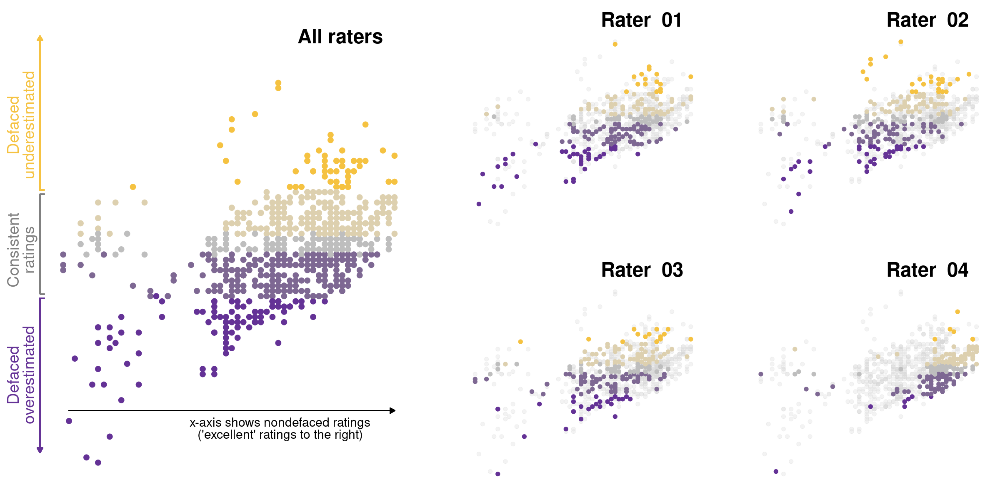 ([Provins et al., 2023](https://rr.peercommunityin.org/articles/rec?id=346)) ] --- ## Conclusion .boxed-content[ .distribute.large[ * Implementing a solid QA/QC is critical to the reliability of research * Layering of QA/QC checkpoints * Resources for efficient screening * Resources: SOPs and QC-book * MRIQC * Defacing ] ] ??? --- layout: false count: false .center[ <a href="https://oesteban.github.io/talks/ISMRM2024/"></a> ## Thanks <br /> <br /> ### Oscar Esteban < phd@oscaresteban.es > QC or not QC Funding: [SNSF 185872](https://data.snf.ch/grants/grant/185872), [RF1MH121867](https://reporter.nih.gov/project-details/10260312), [CZI EOSS5-000266](https://chanzuckerberg.com/eoss/proposals/nipreps-a-community-framework-for-reproducible-neuroimaging/) ] ???